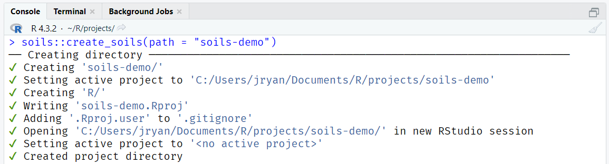

There are two ways to create a {soils} project. The below examples create a project titled “soils-demo”. Replace this name with what you’d like the project and directory to be named.
Option 1. RStudio project wizard
The RStudio user interface is the easiest and recommended way to create a new {soils} project.
Open RStudio > File >
New Project > New Directory >
Quarto Soil Health Report

Enter your desired directory name, browse to where you want the project to live, choose which template to use (currently the options are English or Spanish), and check whether you want the project to open in a new RStudio session.

The new RStudio project will open with the template Quarto report
(01_producer-report.qmd) and the R script
(render-reports.R) to render all reports at once. The rest
of the project files will appear in the files pane.

Demo video
Option 2. RStudio console
Run the below code in your console to create a {soils} project called “soils-demo” in your default working directory.
soils::create_soils(path = "soils-demo")The following will print in your console. Note the location of your new project.

Project structure
Both options will create and launch a new RStudio project with the below files.
Project directory and files
├── 01_producer-report.qmd
├── 02_section-template.qmd
├── 03_project-summary.qmd
├── 04_soil-health-background.qmd
├── 05_physical-measurements.qmd
├── 06_biological-measurements.qmd
├── 07_chemical-measurements.qmd
├── 08_looking-forward.qmd
├── 09_acknowledgement.qmd
├── data
│ ├── data-dictionary.csv
│ └── washi-data.csv
├── images
│ ├── biological.png
│ ├── chemical.png
│ ├── logo.png
│ └── physical.png
├── R
│ └── render-reports.R
├── resources
│ ├── styles.css
│ └── word-template.docx
└── soils-demo.Rproj